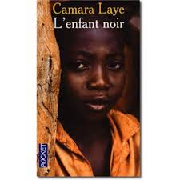
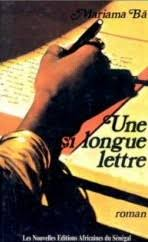
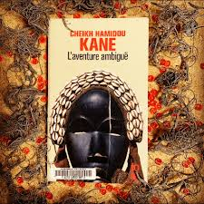
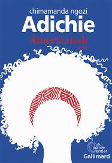
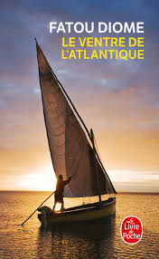
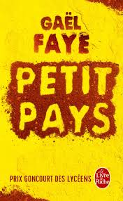
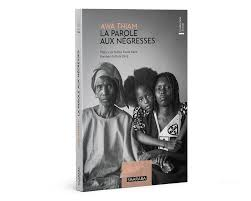
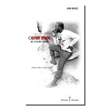
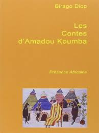
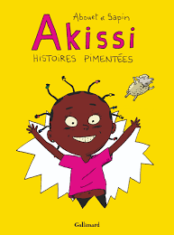

Notre Bibliothèque
Découvrez une sélection soigneusement choisie d'œuvres littéraires africaines, classiques et contemporaines, pour enrichir votre parcours de lecture.
Nos Recommandations
Une collection en cours de constitution pour célébrer la richesse de la littérature africaine
Collection en Préparation
Nous travaillons actuellement à la constitution d'une bibliothèque exceptionnelle qui mettra en lumière les trésors de la littérature africaine. Romans, poésie, essais, contes traditionnels... notre sélection valorisera la diversité et la richesse de nos auteurs.
Classiques
Œuvres incontournables
Contemporains
Nouvelles voix africaines
Jeunesse
Pour les jeunes lecteurs
Vos Suggestions sont les Bienvenues !
Vous avez des recommandations d'ouvrages africains qui vous tiennent à cœur ? Partagez-les avec nous pour enrichir notre future collection.
Nous ContacterNotre Collection
Découvrez une sélection d'œuvres majeures de la littérature africaine
Classiques
Les œuvres fondatrices de la littérature africaine

L'Enfant noir
Un récit autobiographique poignant sur l'enfance en Guinée coloniale.

Une si longue lettre
Une correspondance intime qui explore la condition féminine au Sénégal.
Le Devoir de violence
Une critique acerbe de l'histoire africaine et de la colonisation.

L'Aventure Ambiguë
Œuvre fondatrice de la littérature africaine francophone, ce roman philosophique raconte le parcours de Samba Diallo, jeune élève musulman envoyé en France.
Contemporains
Les nouvelles voix de la littérature africaine

Americanah
Une exploration de l'identité africaine dans le monde contemporain.

Le Ventre de l'Atlantique
Un roman sur l'immigration et les rêves d'Europe.

Petit Pays
L'histoire d'un enfant pris dans la guerre civile au Burundi.

Chambre 7
Chambre 7 parle de toutes ces femmes rejetées, humiliées, violentées, mais qui réussissent à s'imposer face à une société injuste, sans pitié.

La Parole aux Négresses
Essai féministe fondateur qui donne la parole aux femmes africaines. Un acte de courage qui dénonce les violences sexistes.

Ousmane Sembène : Une Conscience Africaine
Biographie du "père du cinéma africain". Retrace la vie d'un écrivain, cinéaste et militant engagé.
Jeunesse
Des œuvres pour les jeunes lecteurs

Les Contes d'Amadou Koumba
Des contes traditionnels sénégalais pour tous les âges.

Akissi
Les aventures d'une petite fille ivoirienne espiègle.